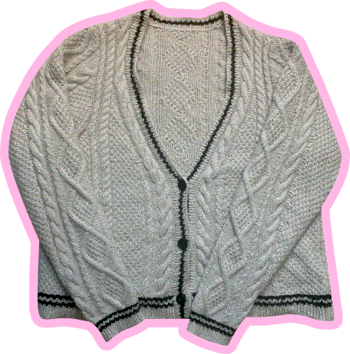
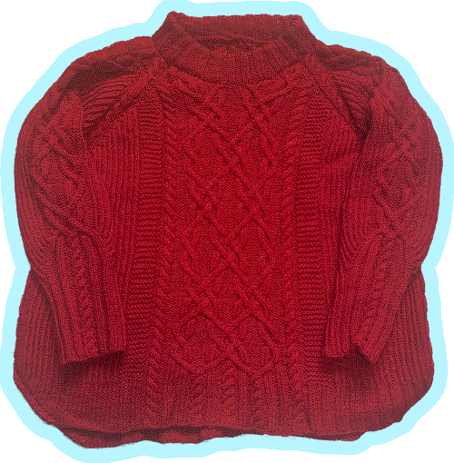
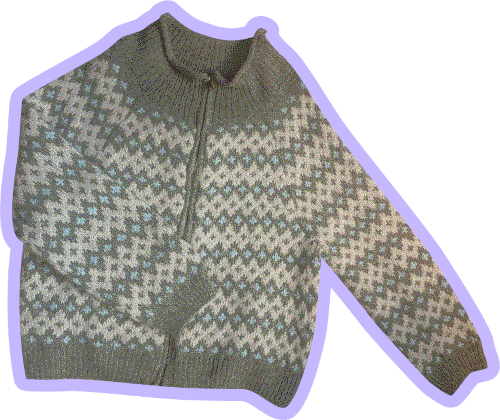

crafts
an assortment of stuff i’ve knitted, crocheted, sewed, etc.
an assortment of stuff i’ve knitted, crocheted, sewed, etc.

my very first top! i’m not nearly as big of a taylor swift fan now as i was when i was a kid, but i’ve loved this design since the cardigan mv came out so much that i still wanted to knit it like four years later (not enough to spend like $80 on the official merch version though 🤧).
this was also my first project to use yarn i unraveled from a commercial sweater. as much as i enjoy knitting and other fiber arts i’ve always felt sort of… guilty? i guess about making clothes from new yarn or fabric since there’s already enough clothes in the world and definitely enough clothes in my closet that it feels selfish to create demand for even more textiles, which is why like 99% of my closet is thrifted in the first place. but i came across a video of someone thrifting, deconstructing, and unraveling a thrifted sweater, and i thought well i go thrifting pretty frequently already, maybe i’ll keep my eyes peeled for something that can be unraveled too… well in my experience the vast majority of sweaters are too fine of a weight to be unraveled, but that’s okay because the time it takes to clean, unravel, and knit a whole ass new sweater is more than enough time to find another sweater that’ll work for the next project 😅
anyways, when i came across an oatmeal colored cardigan at the thrift store made from decently thick yarn, i knew it had to be this cardigan. i made some adjustments to the size of the bicep and armscye to be bigger that in hindsight i probably didn’t need to make, as the fabric has stretched out more than i expected… it’s still very cozy though.

my first (and so far only) sweater. i don’t really like wearing sweaters since even when it’s cold, i still can get hot easily, so i tend to prefer wearing jackets and cardigans that can easily be taken off and put on again. but when i saw this design… i just HAD to have it in my closet. i love cables and something about the cable design on this sweater… i just felt like converting it into a cardigan and only having the cable panel on the back wouldn’t do this pattern justice.
the start of this project was super overwhelming since the entire pattern is charted, so there was like a dozen pages of charts i had to figure out how to follow in what order and get used to the symbol the designer used. once i started to actually follow it though it wasn’t bad at all though, i just had to learn how to do short rows but after figuring that out (which i was intimidated by since it has a rap of being difficult for beginners in the knitting community but… it wasn’t hard at all ???) following the pattern was pretty much smooth sailing from there. i did have to restart once since after doing most of the yoke, i weighed my project and after some calculations i was pretty sure i wouldn’t have enough yarn to finish the project. by some stroke of luck when i went thrifting a few days later i found a sweater that could be unraveled in nearly the exact same shade of red as the yarn i was using, so i held one strand from each sweater to knit the final sweater.
as much as i love the outcome, if there’s one thing i would change it would be to make the torso narrower. even though there’s only like 5" or so of positive ease, the extra fabric creates folds near the raglan line when my arms are down. i know it’s in trend to knit sweaters with way more ease than that, so i didn’t expect to have that as a problem, but it doesn’t bother me enough to try to fix it. i think i could fix it by ripping back to right after the yoke split and not doing the increases at the same time as the decreases in the underarm gusset, but idek if that would work, and i don’t feel like doing alllllllllll that just to finish and still have the same problem.

my first colorwork top! the actual colorwork part was pretty easy to memorize since the pattern is only over 6 stitches. i think the hardest part of the this project wasn’t the actual knitting of it but planning out how to convert it from a sweater into a steeked jacket/cardigan. oh, and sewing in the zipper… and unraveling three whole ass sweaters for yarn…
i’m not a big sweater person but when i saw this design i immediately fell in love with how, idk, geometric? the design was and the bold colors of the designer’s samples, even though i went with a completely different color palette. so i decided that even though i’ve only knit two tops that i could totally figure out how to make it into a cardigan. originally i thought that i could just cast on the steek stitches and call it a day but once i started i realized that shifting the start of the round from one of the raglan lines to the center front would mean i would need to redo all the instructions for the short row (aka i would need to do way more math than i had anticipated).
ultimately i think the changes i had to make to the pattern were okay. steeking (for non-knitters, this is cutting an opening in your work) wasn’t as scary as i thought it’d be - i used a needle-felted steek which i would definitely recommend to anyone else paranoid that a crochet reinforcement won’t hold. i feel like my biggest issue with this project was the fit. even though i’ve always folded it when not wearing it as opposing to using a hangar, the yoke has stretched out much more than i expected, leading the cardigan to feel like it’s slipping down my shoulders even when fully zipped up. it’s frustrating that even though i’ve read tons of tutorials on how to knit and measure gauge swatches, my final projects still act differently than how i’d expect from the gauge swatch. when the fall comes around it think i’ll attempt to reinforce the neck with some crochet slip stitches or something… since i finished this cardigan late spring when it was already warming up i hope i can find a way to get more wear out of it this fall and winter.